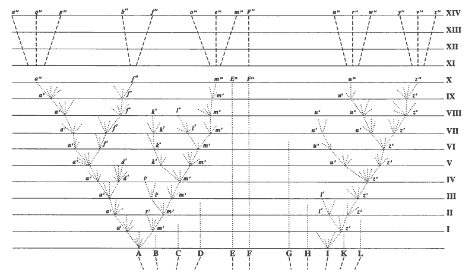

Solicito al lector que se dirija al diagrama que ilustra la acción, como se explicó anteriormente, de estos varios principios; y verá que el resultado inevitable es que los descendientes modificados que proceden de un progenitor se dividen en grupos subordinados a grupos. En el diagrama, cada letra en la línea superior puede representar un género que incluye varias especies; y todos los géneros a lo largo de esta línea superior forman juntos una clase, ya que todos descienden de un antiguo progenitor y, en consecuencia, han heredado algo en común. Pero los tres géneros a la izquierda tienen, bajo este mismo principio, mucho en común, y forman una subfamilia, distinta de la que contiene los dos géneros siguientes a la derecha, que divergieron de un progenitor común en la quinta etapa de la descendencia. Estos cinco géneros también tienen mucho en común, aunque menos que cuando se agrupan en subfamilias; y forman una familia distinta de la que contiene los tres géneros aún más a la derecha, que divergieron en un período anterior. Y todos estos géneros, descendientes de (A), forman un orden distinto de los géneros descendientes de (I). De modo que aquí tenemos muchas especies descendientes de un único progenitor agrupadas en géneros; y los géneros en subfamilias, familias y órdenes, todo bajo una gran clase. El gran hecho de la subordinación natural de los seres orgánicos en grupos bajo grupos, que, por su familiaridad, no siempre nos golpea con suficiente fuerza, se explica, a mi juicio, de esta manera. No cabe duda de que los seres orgánicos, como todos los demás objetos, pueden clasificarse de muchas maneras, ya sea artificialmente por caracteres únicos, o más naturalmente por un número de caracteres. Sabemos, por ejemplo, que los minerales y las sustancias elementales pueden ser así ordenados. En este caso, por supuesto, no hay relación con la sucesión genealógica, y no se puede asignar actualmente ninguna causa para que caigan en grupos. Pero con los seres orgánicos el caso es diferente, y la visión anteriormente expuesta concuerda con su ordenamiento natural en grupo bajo grupo; y nunca se ha intentado ninguna otra explicación.
|
 La única figura en El origen de las especies Una versión más grande de esta imagen (archivo GIF de 60K) está disponible. |
{kind=link}
Darwin, C. (1872), pp. 149, 551-552. El origen de las especies. Sexta Edición. The Modern Library, Nueva York.